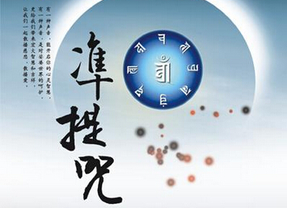

要了解
佛法非常不一样，他告诉我们，看到一个东西，就把它纳入生命里面。可是我们看到一个符号很快就记起来了，要把他整个状况流到生命中，实在是很困难。大脑都记那些符号，大家在一起常说：「你在修什么？我们那里有好多人，很温馨，大家都好庄严、精进，
佛法在训练我们，进入萨婆若海以后如何改变生命，当萨婆若海里装的是贪、瞋、痴时，下辈子就像鳄鱼，如果装的是戒、定、慧，下辈子便跟杨丽花一样表现杰出，漂亮又有名。若要熄灭贪瞋痴，就在萨婆若海里增长
假如是在第六、七、八
我们则是在萨婆若海、生命因素里修行。我从这方向来提醒大家认识佛法，一定要先摸索一段时间，从称赞、礼敬、忏悔上面去摸索萨婆若海这个生命因素的存在，才有办法进一步论及如何修。感觉不到这一点，那就没办法修行。
生命中如果有很多的挫折与困难，修法过程中自然会解决，例如可以对佛
「菩萨，我已经有三栋房子，但想要凑足十栋。」菩萨不听这些，因为这人太贪心。如果不懂发的愿是否正确，很简单，可以跟佛菩萨讲：「我发的愿如果菩萨认为可以，就请答应我，让我满愿。」
你每天三餐不继，菩萨一定帮忙，但如果是贪多务得的话，菩萨就不予理会。
你不能要求菩萨晚上帮忙教训小孩，让他一早起来下跪、忏悔。有时候是我们的错，自己要改，至于怎么改，菩萨会帮忙处理，这是真正的要领。修行人必须领悟到底是山转、路转，还是人转、心转，但千万不要团团转。答应菩萨好好修法，我们自己就会慢慢改过来，该放下的就放下，会圆满的就圆满。不要因为执着而去进行，这是最重要的一点。
这是摸索阶段，必须进行好一段时间，善根够的，也要五年左右。一般人很用心，也需要十年。别以为很快就搞定，一有这种慢心便很难成就，记得这个原则。
我们开始修法有两个部分得同时进行：首先观空。现在持咒，这是空性，刚刚讲般若性空的智慧，所以要有
眼前若不扣紧，将来便难以超越。所谓超越就是把这个法放下，但现在若不抓紧，将来如何放下？你要布施，手里得有东西才能布施，没钱、没东西怎么布施？所以一定要很认真地去修法。最终目的还是在于「放下」。此刻积极修为，修法时，性空也是倂在一起同时进行的。
整个行法过程中，无论是持
在用功过程里，念这八、九或十个字，一个钟头一千遍或许会有一千个
持咒一个钟头为标准，短咒念三千大概算正常。正常的换气、吞口水都没问题，但妄想仍多。念到五千以后，你慢慢发现声音无法太大，否则喉咙受不了，于是你开始进行调整，到达一万之数时，你就变成金刚持、金刚念诵，只有嘴唇动。
一万以上，由于嘴唇的频率太快，于是等于不动了，而从喉咙发出一种声音；一万五以上则不由喉咙发声了。这声音必须自己去感受，你会觉得声音已经不由身体，而由心里发出。也就是说，从一万五到二万之间，你将发现声音是由脑筋里面发出来的。本来从嘴巴（颊）来，后来变成从嘴唇、喉咙来，然后由心来，再从大脑发出来，超过二万以上，全身都可发出那个声音。
发声的祖师爷叫玛尔巴，死时全身发出声音，他人已经死了，全身却还发出声音，那就是他念的咒。一个钟头内念「准提心咒」二万遍，大概已达大脑极限，对
然而这还是世间的，从这里才算正式修行，是一种超越的修行。这当中不仅发声的变化，连呼吸也改变了，否则用原来的呼吸法，一定无法负荷，搞到心脏病。这时候你若会调，随着量的增加，什么心脏病、肺病等症状，都将一体调愈而不见了。吞口水也会发生变化，连带腹肌、肠胃脾肝等等，也都会调好，变得
修行绝非单一的，而是总体性的。例如念阿弥陀佛，一定要把它锁住，一再地深入，你将会发现空性在这里起作用。念到一万开始转变，声音，由这里变成那里的，有口腔的声音变成嘴唇的声音，甚至变成喉咙、肚子里的声音，最后要把心里的声音叫出来，然后变成脑波的声音。
说起来容易，做下去就知道不可思议了。一万、两万遍怎么念？念的次数随着呼吸出现。念的韵律是这样来的，吐一口气回来，大概就一百零八遍。吐一口气差不多半分钟，那绝不像一般喘一口气三秒钟就过去了，他可以延伸至三十秒。那时候如果调得纯熟，大概会慢慢由一百零八遍增至一千零八遍，而念的声音则与呼吸频率结合。所谓龟息法、胎息法就是这样来的，那不是深呼吸，而是一种转变的开始。唾液，我们称「津」，他会很自然地流进去，这东西最营养了。你现在的口水不干净，但修法到一定程度后，口水即变得清凉，可治百病，因为我们本身有条理好。这时候还谈空或不空，就是心理上的障碍。心里有障碍的人绝对不空，告诉人家「你就是放不下」，这种
训练完成后，我们随时都可能提起
心理上有何障碍必须突破？平常注意听经，把相关的法义、教理脉络弄清楚，否则实修下去会碰壁、踢到铁板，此皆因转不过来。所以很多同修说：「师父，我回去拼一晚，拼到差点生病。」什么都没有扫清，当然会生病，不能一个晚上拼这么多，必须循序渐进。假设现在念一千遍，三个月下来，每天一个钟头大概都念三千遍，如此加紧用功，再下来的三个月，大概就增加到五千遍……。
水平一再提升，你发现念三千和念五千的气质不同，念五千跟念八千不一样，八千与一万更是幡然有别，而念到一万五以上，随便什么地方一站，任何人自然都会看到他。因为他依然极突出，有鹤立之姿。其实能念到一万已经不得了了，气质已然大不相同。
所谓多少遍，是指长期的平均数字，而非试过一次就算数，因为你可能是极勉强的压缩，而把胸部、喉咙也弄受伤了。所以不要勉强试验，需经慢慢调整，从一千、二千到三千，皆需维持一段时间，而后才想办法突破与提升。一个钟头念到二万，大概需要三到五年的时间调得上来。这里面要调的东西很多，包括怎么呼吸、发音，唾液怎么吞，还有生理上的习惯等等，若无三、五年之功恐怕不行。
很多地方你听我讲似乎很简单，实际去做就没那么容易。就像刚开始学唱歌，听人家唱DO RE MI很简单，自己实际唱出来就问题丛生，盖皆因生理尚未调整好。同样的，刚开始念咒，声音由口腔转变成嘴唇音，再变成喉咙；呼吸调整变化之际，连我们自己也未必知道。喉咙、唾液等各种转变，修行者本身未必清楚，但无论如何总是得慢慢去调，三、五年时间不为过。这当中假如有所执着，空性就观不出来，进去是观空、行空，就是力行空性。从实修面来讲，一点都含糊不得。我们的讲法已经算透彻，一如修行的蓝图，然而仍必须如实修行才感受得到。你查阅了地图，也问路问了无数次，但就是到不了目的地，问题就出在没有实际经验。实际状况与心里的想象完全不同，因此一定要去实践才能了知。
修行一定要实际去做以后才知道真实状况。正如我告诉大家呼吸怎么转、声音怎么变、唾液怎么吞，结果不说还好，一说之后，你连吞口水都呛到，咳个不停。修行时会发生各种不同的状况，每个人的因缘不同，但都必须去修法实践。
法本，属于前面摸索阶段的仪轨。行者透过文字去感受，但一进入行法，便无法诉诸言说、形诸文字，因此正修的这一部分，所有法本都不提。我们用最清楚的方法提点大家，然后精进共修，遇到任何问题就提出来研究，不要自己乱想。本来要去吴凤庙，结果找到土地公庙，还大嚷大叫：「我找到了！」若要验证修行成果，必须拿出来说明，这是实修正行的重点。
最后要谈的是发愿与回向。我们花本个钟头或一个小时完成修法后，就如做完工作领到酬劳，开始分配要存银行或买股票，但这还不是目的。最终目的是要把钱用掉，兑现成有用的东西。有人兑现成牛排，有的人捐给慈善机构作为捐献，有人拿去旅行、买房子或买汽车，总之，就是兑现成自己满意的用途；钱的分配就相当于「发愿」，兑现其用途便相当于「回向」。
功课做完就有福报，可以分配到智慧这边或自利那边，此即发愿。发愿后要运用，例如祖父母往生甚久，可以分给他们福德资粮，这等于荐亡、
假如布施三千，你可以分配超度、消灾、点灯各一千，但功课方面，你分两部分即可，一是利他，愿众生如何如何；一是自利，愿自己的菩提道能够持续成长。刚开始不懂得分配，可能只回向给自己的亲朋好友，但功课慢慢做下去就一直进步，你比渐渐从文字相转入实相。
发愿与回向是修法的圆满结局，修法的动机或目的是要自性清净显现出来，功课做完了，便应当思惟：「自性清净心显现了吗？」自性清净心是摩尼宝珠，原本光明照耀，如今被种种贪、瞋、痴等污染，无法闪耀出应有的光芒。修法完毕后，就像是把宝珠擦了一遍，看看是否变得光亮一些。我们必须做这样的反省。做完功课后，回向就等于检查一遍，看看哪里做得不对或不好，需要下次改进，这是很重要的关键。
做完功课拜三拜起来之后，需得静静回想刚才所做的功课，在进行当中有多少妄想？究竟念了几千遍或几万遍？进步了多少？妄想又是怎么进来、怎么退出的？持诵当中乱了几次？回想过程中，你若每一次都能抓到某些重点，如此将会进步神速。否则每次都欠缺回想检讨，浑浑噩噩，像煎咸鲢鱼一样，只是这次翻过来，下次翻过去，那样不可能有进步。
这种回想能让我们进步神速，由于懂得反省怎么做才对，便渐渐能抓到要领。当然，这也没那么容易。我自己
总之，回想的功夫很重要。拜佛绝对没错，但拜佛之心可能会搞错；持咒不会错，但持咒的方法、要领、用心、动机却有可能出错。所谓「善用其心」，必须持续地回想、反省，相关作用才能发挥出来。如以三个月为一期，你会发觉进步神速。回想，会让我们发觉气的转换，会察觉念咒声音的转变，每天的进步你都能看得清楚，这一点非常重要。
生活周遭有很多障碍要试着放下，在修法过程中，把心放在法上，周遭的诸多障碍应该都不会发挥作用了。不过，假如修法以后，家里、生活、事业等还是多有障碍，这表示某些事对你影响很大，这时应分两方面来同时进行，一方面尽人事去将事情处理好，另一方面则得增加做功课的时间。例如一个钟头增为两个小时。
你可能因为多生累劫以来的习气太重，一个钟头的修行尚无法转换过来，这时必须增加修行的时间。一天增加至四个钟头以上，对多数人而言负担太重，就像琴弦绷得太紧，烦恼定然会起，身体也将产生障碍。纵使是
这时先放下持咒、
如果你精进修行，但尚有许多莫名其妙的障碍，那么所能做的，唯有忏悔而已。一方面精进，同时也认真忏悔，盖因不知自己夹杂了多少业障，所以就得很谦虚、冷静、客观地反省，如是修行，想快点成就亦不至于太难。
不管修什么法门，希望各位要坚持、忠心，对道场、师父、法门都要忠心。想得到如一百克拉钻石闪耀的殊胜效果，就得好好珍惜、把握这难得的修行机会，希望人人皆得尽快证得殊胜的圣果。